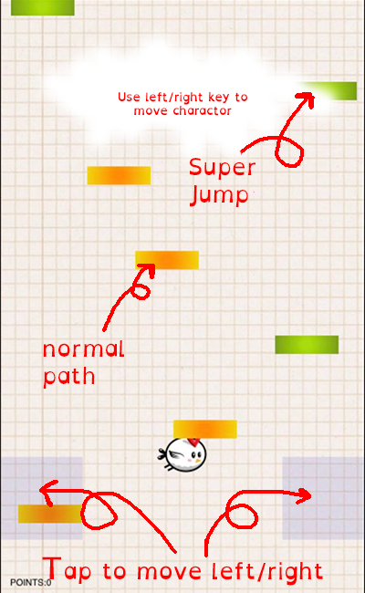

Code Platform
1. Pathform by Michal Budzynski
tutoral web
1. keyboard controller
2. touch controller by Florian Scholz
3. some game functions by Kushagra Agarwal
small code Snippets
1. Detecting a mobile browser by Santhosh
1. A few game functions by Kushagra Agarwal
Images
1. Background
2. Charactor by bevouliin.com